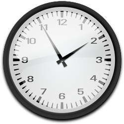

Horas no Brasil
| Fernando De Noronha | Brasília | Amazonas | Acre |
|---|---|---|---|
| 14:25 | 13:25 | 12:25 | 11:25 |
| Fernando De Noronha | Brasília | Amazonas | Acre |
Horas Agora em Brasília
Horas Agora em Manaus
Baixar Lista de Fusos Horários do Brasil
{kind=link}
Atualizações Futuras
Os horários presentes na tabela serão atualizados
conforme o programador entrar para redefinir, mas em futuras atualizações do site,
entrará em vigor a atualização das horas em tempo real.
Para que serve o Fuso Horário?
Para que serve os Fuso Horários:
O sistema de fusos horários surgiu com o objetivo de padronizar
a contagem das horas no mundo, facilitando assim as comunicações,
o comércio internacional e as viagens.
O marco zero para essa contagem é o Meridiano de Greenwich (0°),
que fica no centro do fuso horário inicial.
O que é o horário de verão?
O horário de verão consiste no aproveitamento máximo da luz solar
a fim de economizar no consumo de energia elétrica.
Essa medida é adotada em diversos países.
O horário de verão é uma medida adotada em alguns países
que buscam reduzir o consumo de energia elétrica.

 |
 |